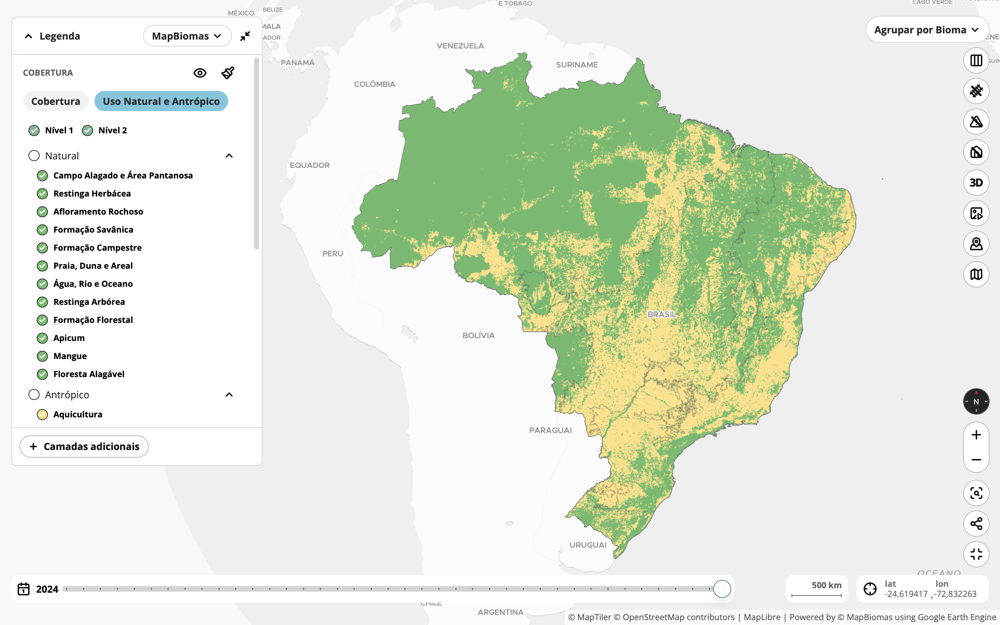
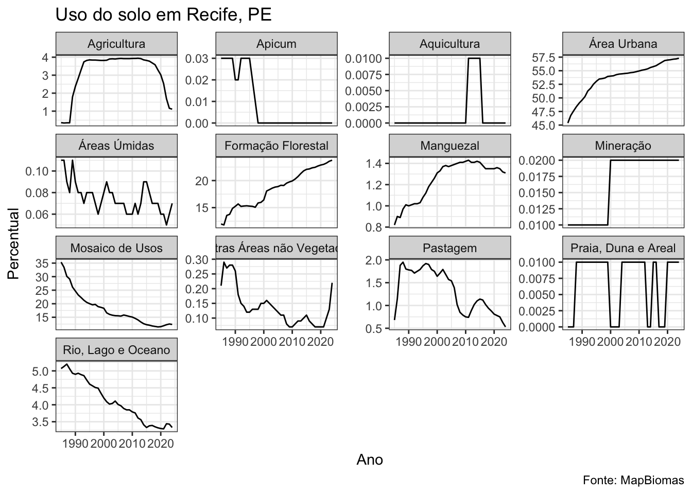
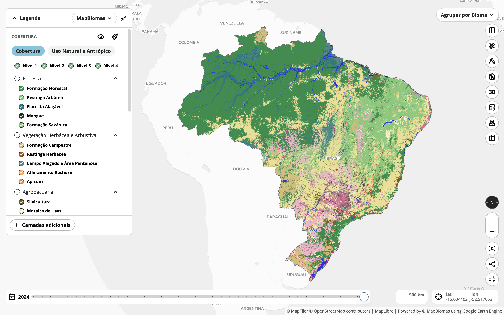
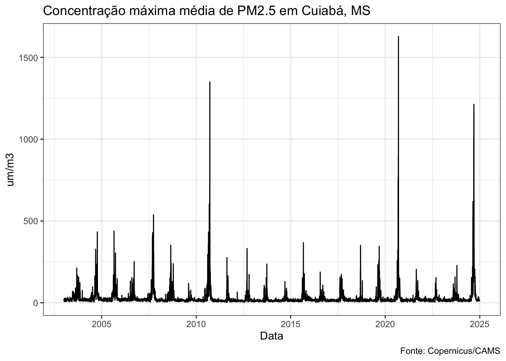

Indicadores ambientais desempenham papel central na análise da saúde pública ao possibilitarem a identificação, o monitoramento e a compreensão dos fatores ambientais que influenciam o bem-estar das populações. Variáveis como uso e cobertura do solo, condições de umidade e seca, dinâmica da vegetação e níveis de poluição do ar e da água permitem caracterizar exposições e contextos territoriais de risco. Quando integrados a dados de saúde, esses indicadores ampliam a capacidade de análise, favorecendo a identificação de padrões, a antecipação de agravos e o direcionamento de ações preventivas. Além disso, fornecem base empírica para a formulação de políticas públicas mais eficazes e territorialmente orientadas. Assim, o uso sistemático e integrado de indicadores ambientais fortalece a vigilância em saúde, contribui para a redução de desigualdades e apoia a tomada de decisão fundamentada em evidências científicas.
Este capítulo apresenta alguns principais indicadores ambientais de interesse para a saúde pública.
5.1 Solo
Indicadores sobre uso e ocupação do solo permitem determinar quais as condições ambientais que as populações estão expostas, evidenciando questões como adensamento urbano, ocupação desordenada, vulnerabilidade a desastres e escassez de áreas verdes. Estes fatores tem grande influencia na saúde humana, afetando a qualidade do ar e do solo, o conforto térmico e o bem-estar psicológico.
5.1.1 Taxa de Densidade Demográfica
Conceituação
Relação entre o número de habitantes e a área geográfica, expressa geralmente em habitantes por quilômetro quadrado (hab/km²).
Interpretação
A densidade demográfica ou populacional está associada à demanda por serviços de saúde, infraestrutura, saneamento e transporte. Altas densidades podem favorecer a propagação de doenças transmissíveis, aumentar a poluição e reduzir a qualidade de vida, enquanto baixas densidades podem dificultar o acesso a serviços básicos.
Usos
Utilizando no planejamento urbano e regional, alocação de recursos públicos, análise de risco epidemiológico, vigilância em saúde e políticas de habitação.
Limitações
O indicador não considera características do território, como áreas não-habitáveis (corpos d’água e florestas e montanhas protegidas pela legislação ambiental).
Uma alta ou baixa densidade não está relacionado, necessariamente, a uma maior ou menor qualidade de vida.
Fonte de dados
Censos populacionais, estimativas populacionais e dados geográficos de instituições oficiais, como o IBGE (Brasil).
Unidade geográfica: Brasil, grandes regiões, estados, Distrito Federal e regiões metropolitanas, municípios.
5.1.2 Uso do solo por categoria

Mapa de uso do solo, MapBiomas, 2024.
Conceituação
Classificação e quantificação das diferentes formas de utilização da superfície terrestre por atividades humanas, como moradia, agricultura, indústria, comércio, áreas verdes, infraestrutura e áreas institucionais. Ele permite identificar como os espaços são organizados e utilizados dentro de uma área geográfica específica.
Interpretação
O uso do solo influencia diretamente as condições ambientais e sanitárias de uma região. Ocupações inadequadas podem resultar em exposição a riscos como contaminação por resíduos, poluição atmosférica, alagamentos, e proliferação de vetores de doenças. O acesso a áreas verdes, serviços públicos e infraestrutura adequada, refletido no uso do solo, está associado a melhores condições de saúde física e mental.
Usos
Planejamento urbano e ordenamento territorial.
Avaliação de impactos ambientais.
Gestão de recursos naturais e infraestrutura.
Formulação de políticas públicas de saúde, habitação e mobilidade.
Monitoramento da expansão urbana e uso sustentável do território.
Limitações
Pode não refletir a qualidade do uso ou a intensidade da atividade (ex: área residencial subutilizada ou superlotada)
Classificações podem variar conforme a metodologia adotada.
Nem sempre identifica usos mistos ou informais do solo (como moradia em áreas industriais ou invasões).
Método de cálculo
O indicador de uso do solo pode ser expresso em termos percentuais ou absolutos da área ocupada por cada tipo de uso em relação à área total analisada. O cálculo é feito com base em classificação de imagens de satélite, por meio de técnicas de sensoriamento remoto e análise multiespectral.
\[
\text{Uso do solo} = \frac{\text{Área de uso específico}}{\text{Área total}} \times 100
\]
As principais categorias mensuradas são:
Uso residencial
Uso comercial
Uso industrial
Uso institucional
Uso agrícola ou rural
Uso de lazer e recreação
Áreas verdes ou vegetadas
Infraestrutura, como sistemas de transporte e saneamento
Corpos d’água
Uso indefinido, como lotes vagos ou em transição
Categorias sugeridas para análise
Unidade geográfica: Brasil, grandes regiões, estados, Distrito Federal e regiões metropolitanas, municípios.
O repositório abaixo disponibiliza uma série histórica dos percentuais de uso do solo dos municípios brasileiros.
Veja um exemplo prático de uso usando o R.
library(zendown)library(arrow)library(dplyr)library(ggplot2)zen_file(19285752, "uso_solo_mapbiomas.parquet") |>read_parquet() |>filter(cod_ibge ==2611606) |>ggplot(aes(x =as.numeric(ano), y = percentual)) +geom_line() +facet_wrap(~classe, scales ="free_y") +labs(title ="Uso do solo em Recife, PE",x ="Ano",y ="Percentual",caption ="Fonte: MapBiomas" ) +theme_bw()

5.1.3 Cobertura do solo por categoria

Mapa de cobertura do solo, MapBiomas, 2024.
Conceituação
Descrição da superfície terrestre com base nos elementos físicos e biológicos visíveis, como vegetação natural, corpos d’água, edificações, solo exposto e superfícies impermeáveis. Diferentemente do uso do solo, que está ligado à atividade humana, a cobertura do solo representa o que efetivamente recobre o terreno, independentemente de sua função.
Dica
A cobertura do solo descreve o que está presente sobre a superfície terrestre, enquanto o uso do solo explica como essa superfície é empregada ou manejada. Assim, uma mesma categoria de cobertura pode corresponder a diferentes tipos de uso. Por exemplo, uma área coberta por vegetação florestal pode estar destinada à conservação ambiental (uso conservacionista) ou à produção madeireira (uso econômico).
Interpretação
A cobertura do solo influencia diretamente a qualidade ambiental e, consequentemente, a saúde da população. A presença de áreas verdes, por exemplo, está associada à melhora da qualidade do ar, redução de ilhas de calor, promoção da atividade física e bem-estar mental. Por outro lado, superfícies impermeáveis e solo exposto podem aumentar o risco de enchentes, poluição e propagação de vetores de doenças.
Usos
Monitoramento ambiental e urbano.
Planejamento e gestão territorial.
Avaliação de impactos ambientais.
Estudos sobre mudanças climáticas e eventos extremos.
Identificação de áreas de risco para intervenções em saúde pública.
Limitações
A distinção entre tipos de cobertura pode ser dificultada por limitações na resolução de imagens ou interferência de nuvens e sombras.
Pode não refletir a dinâmica sazonal da vegetação (ex: áreas agrícolas variam ao longo do ano).
O indicador pode ser expressado em termos percentuais ou absolutos da área ocupada por cada tipo de cobertura. O cálculo é feito com base em classificação de imagens de satélite, por meio de técnicas de sensoriamento remoto e análise multiespectral.
\[
\text{Cobertura do solo} = \frac{\text{Área de uma classe de cobertura}}{\text{Área total}} \times 100
\]
As principais classes mensuradas são:
Vegetação natural
Reflorestamento e silvicultura
Áreas urbanizadas
Solo exposto
Agricultura
Pastagem
Corpos d’água
Áreas úmidas e várzeas
Categorias sugeridas para análise
Unidade geográfica: Brasil, grandes regiões, estados, Distrito Federal e regiões metropolitanas, municípios.
5.2 Seca
Indicadores sobre seca ajudam a antecipar, monitorar e mitigar uma série de impactos diretos e indiretos que a escassez de água pode provocar na população, impactando na transmissão de doenças, na segurança alimentar, em problemas respiratórios, doenças crônicas e na saúde mental.
5.2.1 Índice de Precipitação Padronizado
Também chamado de Standardized Precipitation Index (SPI).
Quantifica desvios da precipitação observada em relação à média histórica, em escalas temporais diversas (1, 3, 6, 12, até 48 meses).
Interpretação
O SPI permite identificar secas meteorológicas que podem ter efeitos diretos e indiretos sobre a saúde pública. O estresse hídrico pode aumentar a vulnerabilidade de populações já em risco social, dificultando o acesso a saneamento básico e serviços de saúde.
Ele é padronizado com média zero e desvio padrão um, permitindo comparações entre regiões e períodos distintos, independentemente do clima local.
Usos
Monitoramento de secas meteorológicas em sistemas de alerta precoce.
Planejamento de recursos hídricos e agrícolas.
Estudos de impacto climático em saúde, agricultura e segurança hídrica.
Classificação da severidade da seca (leve, moderada, severa e extrema).
Subsídio à elaboração de políticas públicas e ações de mitigação.
Limitações
Não considera a temperatura ou a evapotranspiração, o que pode superestimar a umidade disponível em regiões quentes.
Baseia-se exclusivamente em precipitação, podendo não refletir diretamente o estresse hídrico no solo ou vegetação.
Requer séries históricas longas e consistentes para maior confiabilidade.
Fonte de dados
Estações pluviométricas do INMET, ANA, CEMADEN e outras redes estaduais.
Produtos de reanálise climática (como ERA5) ou dados de satélite calibrados.
Bases globais como CHIRPS, GPCC, CRU e GPCP para escalas continentais ou globais.
Método de cálculo
Coleta da série histórica de precipitação em uma escala de tempo (ex: acumulado de 3 meses).
Ajuste da série a uma distribuição estatística (normalmente a distribuição gama).
Transformação da distribuição para uma normal padrão, com média zero e desvio padrão igual a um.
Cálculo do SPI como o valor \(z\) correspondente à precipitação observada.
O SPI pode ser classificado em categorias:
Classificação do SPI
SPI
Categoria de seca
> +2,0
Extremamente úmido
0 a +1,0
Condições normais
-1,0 a -1,49
Seca moderada
-1,5 a -1,99
Seca severa
< -2,0
Seca extrema
Categorias sugeridas para análise
Unidade geográfica: Brasil, grandes regiões, estados, Distrito Federal e regiões metropolitanas, municípios.
Indicador de PDSI para os municípios brasileiros. Saúde no Semiárido, 2022.
Conceituação
Estima o balanço hídrico de uma região, combinando precipitação, evapotranspiração potencial (\(ET_0\)), capacidade de armazenamento de água no solo e recarga hídrica.
Interpretação
O PDSI apresenta uma série padronizada em que valores negativos indicam seca (–1 = seca moderada; –3 = seca severa; ≤ –4 = seca extrema) e valores positivos indicam condições úmidas.
Usos
Monitoramento operacional de secas em serviços meteorológicos e sistemas de alerta precoce.
Gestão de recursos hídricos (reservatórios, irrigação, hidroeletricidade).
Estudos epidemiológicos que relacionam eventos de seca a eventos de saúde.
Limitações
Utiliza coeficientes empíricos calibrados para regiões dos EUA (modelo original), podendo exigir recalibração para outros climas.
Sensível ao tipo de solo e profundidade radicular assumidos; erros nesses parâmetros afetam o resultado.
Requer longas séries contínuas de precipitação e temperatura; falhas comprometem a confiabilidade. Responde lentamente a eventos curtos (veranicos), pois foca no balanço de longo prazo.
Método de cálculo
Conversão da temperatura média mensal em evapotranspiração potencial (\(ET_0\)) via equação de Thornthwaite ou Penman-Monteith simplificada.
Cálculo do balanço hídrico mensal, estimando:
Água disponível após \(ET_0\)
Recarga e escoamento superficial
Alteração do armazenamento de água no solo.
Determinação das variáveis de deficiência/excesso hídrico (\(d\), \(D\), \(Z\)) segundo Palmer.
Cálculo iterativo do índice PDSI que reflete anomalias acumuladas, com coeficientes \(K\) de escalonamento sazonal.
Classificação da severidade com base em limiares padronizados
Dica
Versões modernas incluem o Self-Calibrating PDSI (sc-PDSI), que ajusta automaticamente os coeficientes K à variabilidade climática local, melhorando a comparabilidade inter-regional.
Categorias sugeridas para análise
Unidade geográfica: Brasil, grandes regiões, estados, Distrito Federal e regiões metropolitanas, municípios.
Fonte de dados
Séries pluviométricas e termométricas de redes nacionais (INMET, ANA, CEMADEN) ou dados globais (CRU, GPCC, CHIRPS).
Reanálises climáticas (ERA5, MERRA-2) para regiões com escassez de estações.
Bases de solos (FAO, SoilGrids) para estimar capacidade de campo e água disponível.
Trata-se de um índice espectral calculado a partir da reflectância no infravermelho-próximo (NIR) e na banda vermelha de sensores remotos orbitais ou aerotransportados. Varia de \(–1\) (água/turbidez) a \(+1\) (vegetação densa), representando o “verdor” ou a atividade fotossintética da cobertura vegetal.
Interpretação
Serve como proxy objetiva da exposição a áreas verdes, cujo aumento já foi relacionado a menores mortalidade por todas as causas e cardiovascular, menor incidência de doenças respiratórias, melhor saúde mental, redução do peso ao nascer e mitigação de ilhas de calor urbanas. Assim, o NDVI apoia avaliações de risco ambiental, vigilância epidemiológica e planejamento de cidades mais saudáveis.
Usos
Classificação de cenários de “alto” e “baixo” verde em estudos de coorte.
Modelagem de habitats de vetores (malária, dengue, leishmaniose).
Monitoramento de ondas de calor e planejamento de arborização
Avaliação de efetividade de intervenções urbanas (parques, corredores verdes).
Estudos de poluição atmosférica (vegetação como barreira física).
Limitações
Saturação em florestas muito densas.
Influência de solo exposto, neve ou umidade.
Sensibilidade a variações atmosféricas e ângulo solar.
Não distingue tipos de vegetação nem informa estrutura vertical.
Este indicador quantifica a presença de partículas sólidas e gotículas líquidas no ar com diâmetro aerodinâmico menor ou igual a 2,5 \(\mu m\), incluindo sulfatos, nitratos, carbôno, metais, poeira e outros elementos.
Interpretação
O material particulado deste diâmetro penetra profundamente nos alvéolos pulmonares, podendo alcançar a corrente sanguínea. Este indicador está associado a aumento de mortalidade por doenças cardiovasculares e respiratórias, câncer de pulmão, AVC, diabetes e desfechos adversos na gestação.
O indicador é lido como a concentração média de material particulado no ar por metro cúbico.
Usos
Vigilância da qualidade do ar
Estudos epidemiológicos
Avaliação de políticas públicas de controle de emissões
Sistemas de alerta precoce
Limitações
Alta variabilidade espacial: poucas estações podem subestimar ou superestimar exposições reais
Equipamentos de referência são caros e exigem manutenção
Sensores de baixo custo requerem calibração frequente e correção por temperatura/umidade
Impossibilidade de se determinar a fonte emissora do material (como tráfego, queima de biomassa, indústria, entre outros)
A composição química não é capturada pelo valor de massa
Categorias sugeridas para análise
Unidade geográfica: Brasil, grandes regiões, estados, Distrito Federal e regiões metropolitanas, municípios.
Fonte de dados
Este indicador pode ser calculado diretamente a partir de sensores ou estimado por sensoriamento remoto.
O repositório abaixo disponibiliza uma série histórica dos percentuais de uso do solo dos municípios brasileiros.
Veja um exemplo prático de uso usando o R.
library(zendown)library(arrow)library(dplyr)library(ggplot2)zen_file(16374139, "pm25_max_mean.parquet") |>read_parquet() |>filter(code_muni ==5103403) |>ggplot(aes(x = date, y = value)) +geom_line() +labs(title ="Concentração máxima média de PM2.5 em Cuiabá, MS",x ="Data",y ="um/m3",caption ="Fonte: Copernicus/CAMS" ) +theme_bw()

MCKEE, T. B.; DOESKEN, N. J.; KLEIST, J. The Relationship of Drought Frequency and Duration to Time Scales. Proceedings of the 8th Conference on Applied Climatology. Anais...Anaheim, CA: American Meteorological Society, 1993.